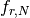
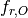
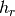
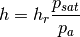
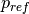
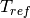
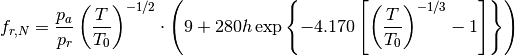
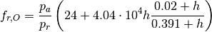

Atmosphere¶
The atmosphere module contains functions and classes related to atmospheric acoustics.
- class acoustics.atmosphere.Atmosphere(temperature=293.15, pressure=101.325, relative_humidity=0.0)[source]¶
Bases: object
Class describing atmospheric conditions.
- REF_PRESSURE = 101.325¶
International Standard Atmosphere in kilopascal
- REF_TEMP = 293.15¶
Reference temperature
- TRIPLE_TEMP = 273.16¶
Triple point isotherm temperature.
- __init__(temperature=293.15, pressure=101.325, relative_humidity=0.0)[source]¶
Constructor
Parameters: - temperature – Temperature
- pressure – Pressure
- relative_humidity – Relative humidity
- attenuation_coefficient(frequency)[source]¶
Attenuation coefficient
 describing atmospheric absorption in dB/m as function of frequency.
describing atmospheric absorption in dB/m as function of frequency.Parameters: frequency – Frequencies to be considered.
- ir_attenuation_coefficient(d, fs=44100, N=2048, sign=1)[source]¶
Calculate the impulse response due to air absorption.
Parameters: - fs – Sample frequency
- d – Distance
- N – Blocks
- sign – Multiply (+1) or divide (-1) by transfer function. Multiplication is used for applying the absorption while -1 is used for undoing the absorption.
- molar_concentration_water_vapour[source]¶
Molar concentration of water vapour
 calculated using molar_concentration_water_vapour().
calculated using molar_concentration_water_vapour().
- plot_attenuation_coefficient(frequency, filename=None)[source]¶
Plot the attenuation coefficient
as function of frequency and write the figure to filename.Parameters: - filename – Filename
- frequency – Frequencies
Note
The attenuation coefficient is plotted in dB/km!
- plot_ir_attenuation_coefficient(fs, N, d, filename=None)[source]¶
Plot the impulse response of the attenuation due to atmospheric absorption. The impulse response is calculated using ir_attenuation_coefficient().
Parameters: - filename – Filename
- fs – Sample frequency
- N – Blocks
- d – Distance
- pressure = None¶
Ambient pressure .
- relative_humidity = None¶
Relative humidity
- relaxation_frequency_nitrogen[source]¶
Resonance frequency of nitrogen  calculated using relaxation_frequency_nitrogen().
- relaxation_frequency_oxygen[source]¶
Resonance frequency of oxygen  calculated using relaxation_frequency_oxygen().
- saturation_pressure[source]¶
Saturation pressure calculated using saturation_pressure().
- soundspeed[source]¶
Speed of sound
 calculated using soundspeed().
calculated using soundspeed().
- temperature = None¶
Ambient temperature
 .
.
- acoustics.atmosphere.SOUNDSPEED = 343.2¶
Speed of sound.
- acoustics.atmosphere.attenuation_coefficient(pressure, reference_pressure, temperature, reference_temperature, relaxation_frequency_nitrogen, relaxation_frequency_oxygen, frequency)[source]¶
Attenuation coefficient
describing atmospheric absorption in dB/m for the specified frequency.Parameters: - temperature – Ambient temperature
- pressure – Ambient pressure
- frequency – Frequencies to calculate for.
According to ISO9613-1:1993.
- temperature – Ambient temperature
- acoustics.atmosphere.molar_concentration_water_vapour(relative_humidity, saturation_pressure, pressure)[source]¶
Molar concentration of water vapour
.Parameters: - relative_humidity – Relative humidity 
- saturation_pressure – Saturation pressure
- pressure – Ambient pressure

According to ISO9613-1:1993.

- acoustics.atmosphere.relaxation_frequency_nitrogen(pressure, ref_pressure, temperature, ref_temperature, h)[source]¶
Relaxation frequency of nitrogen .
Parameters: - pressure – Ambient pressure
- ref_pressure – Reference pressure 
- temperature – Ambient temperature
- ref_temperature – Reference temperature 
- h – Molar concentration of water vapour
According to ISO9613-1:1993.

- acoustics.atmosphere.relaxation_frequency_oxygen(pressure, ref_pressure, h)[source]¶
Relaxation frequency of oxygen .
Parameters: - pressure – Ambient pressure
- ref_pressure – Reference pressure
- h – Molar concentration of water vapour
According to ISO9613-1:1993.

 given by
given by